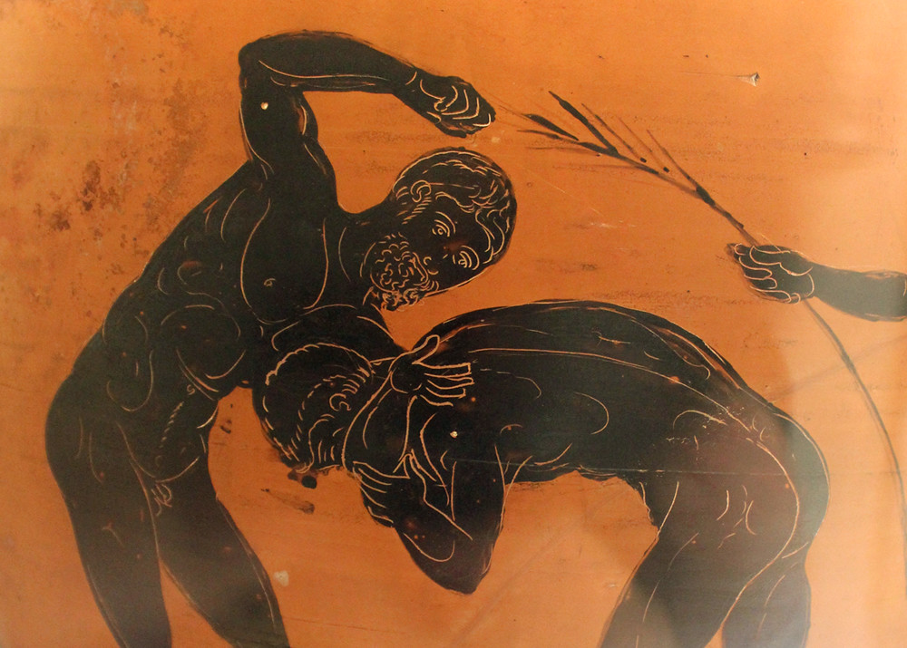
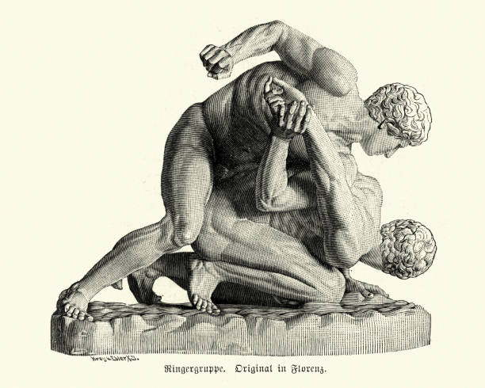
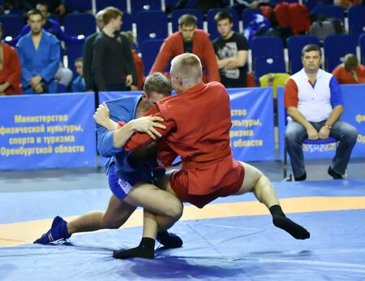

Pankration
History
Pankration is one of the oldest mixed martial on record. You can derive this martial art all the way back to ancient Greece, during the second millenium BCE. Pankration is a mix of boxing and wrestling, and full contact. We see it as a sport; however, back then it was also a fighting system that the armies used as part of their arsenal.It was widely used from the mighty Spartans to the great Macedonian Phalanxes. They introduced the martial art during the 33rd Olympic Games and very quickly became a crowd favourite.
Rules
A full contact sport that allows the participants to use different techniques such as striking, grappling, and wrestling. This sport virtually had no rules, almost anything was allowed during a fight. The match ends when someone is under submission by raising their index finger or by death. There are two phases, Ano Pankration (Upper Pankration), this is where they would fight upright and try to bring the opponent to the ground. Once on the ground, they are now in the second phase, Kato Pankration (Lower Pankration), this is where they are able to do any form of grappling and wrestling. At this point they will try to put the opponent into a submission to win the game.
Fun Facts
Greek Mythology depicts Thesus using pankration to defeat the minotaur in the Labyrinth of Minos. Pankration is still played during modern time as a sport in both Olymics and as a recreational activity. The word pankration is derived from acient Greek word Pan for all and the word Kratos for might, all together meaning "all of the might". When the sport was initally developed, the participants fought in the nude and were oiled up. Eventually they started to wearing wrappings around their hands and forearms.